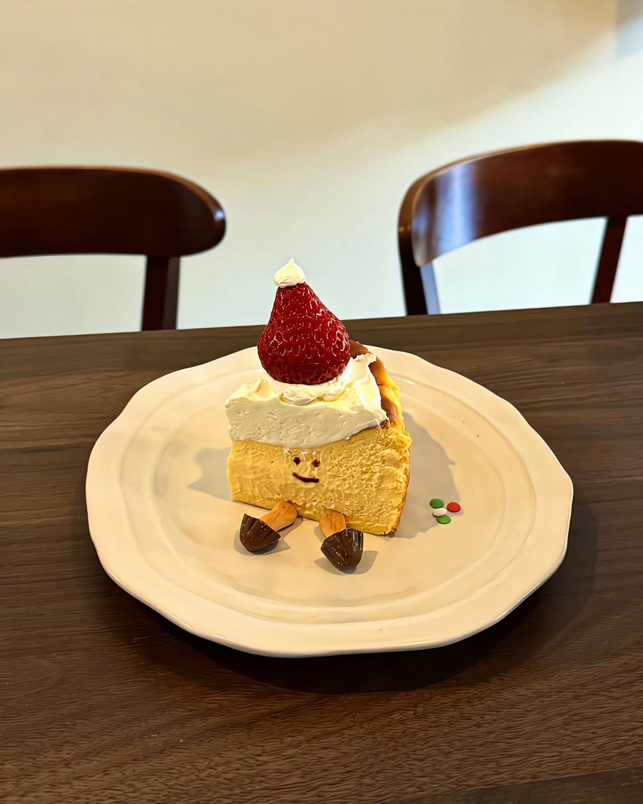
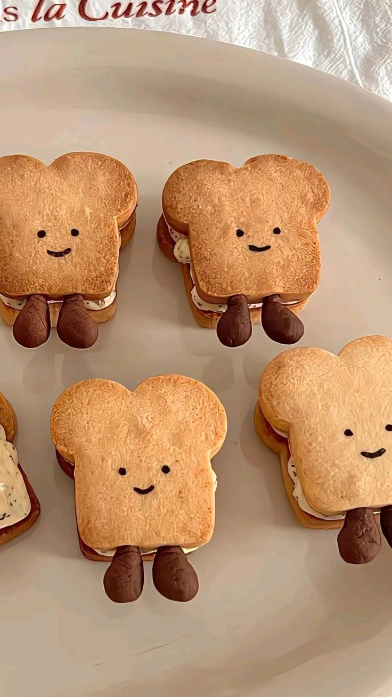
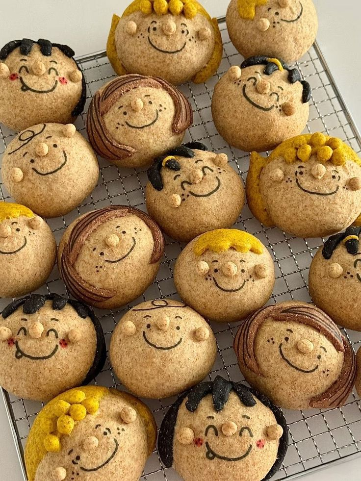
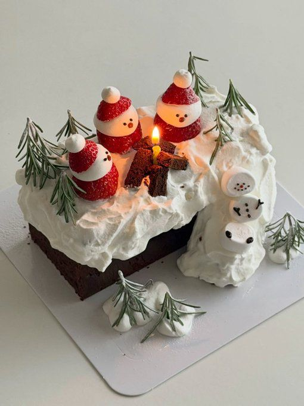
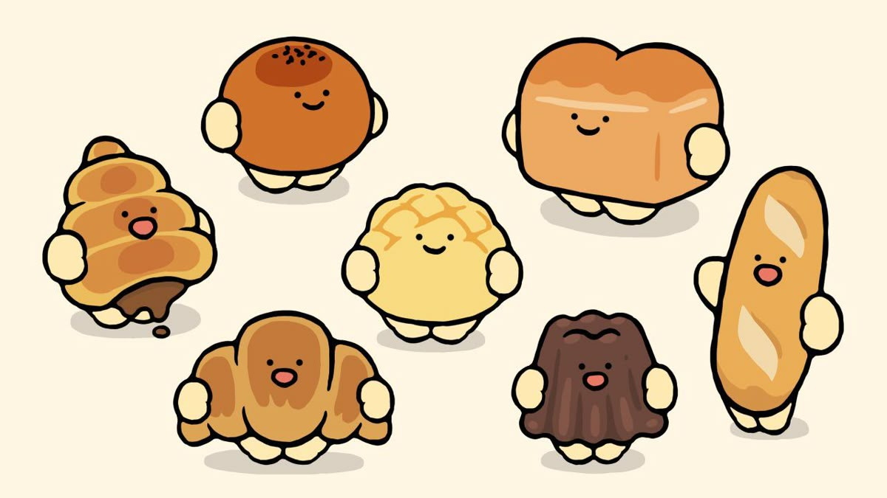

달콤한 발견
다양한 베이커리와 특별한 디저트

HAPPY맛있는 빵과 특별한 디저트, 직접 만드는 즐거움까지!
빵을 좋아하는 누구나 주인공이 되는 이틀간의 축제예요.

다양한 베이커리와 특별한 디저트

온 가족이 함께 만드는 빵의 추억

사진으로 남기는 달콤한 하루
※ 일정과 프로그램은 웹사이트 시연을 위한 예시입니다.

취향 저격 베이커리와 특별한 빵을 만나요.
세상에 하나뿐인 나만의 쿠키를 만들어요.
귀여운 디저트와 함께 추억을 남겨요.
보기만 해도 미소가 지어지는 빵친구들을 만나보세요.
